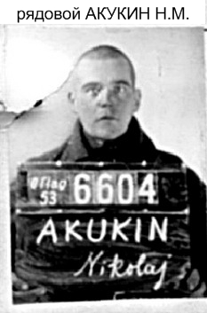
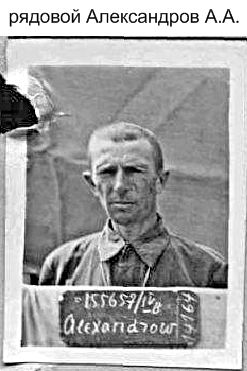
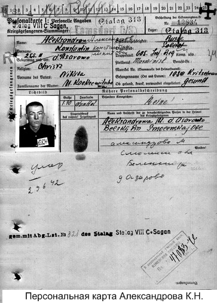
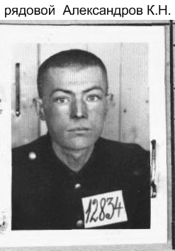

(Продолжение.)
АКИМОВ Иван Акимович родился в 1906 г. в д. Столопово Брусовского (Удомельского) р-на Калининской области. Крестьянин. Православный. Русский. Жена Александра.
В армию призван Брусовским РВК. Рядовой 471-го стрелкового полка. Попал в плен 5 июля 1941 г. под Смоленском. Регистрацию прошел в шталаге № 315 Хаммерштайн. Регистрационный номер 18453. Переведен в шталаг II D Штаргард/Кауерндорф. Погиб в этом лагере 7 ноября 1941 г. от общего заражения крови. Похороненн в братской могиле на лагерном кладбище Нойефридхоф. После войны перезахоронен в братской могиле советских военнопленных на советско-французском кладбище в г. Старгард-Щецинский, ул. Реймонта, Западно-Поморское воеводство, Республика Польша.
АКИМОВ Иван Фролович родился 1 августа 1910 г. в д. Раменье Тарасковского с/с Каменского (Кувшиновского) р-на Калининской области. Столяр. Православный. Русский. Жена Мария.
В армию призван Каменским РВК в 1941 г. Рядовой 195-го стрелкового полка 181-й стрелковой дивизии. В плен попал 19 июля 1941 г. под г. Опочка Калининской (Псковской) области. Регистрацию прошел в Восточной Пруссии, в шталаге I A Штаблак/Кляйн-Дексен. Номер регистрации 2. Погиб в лагере 6 декабря 1941 г. Похоронен в братской могиле советских военнопленных на лагерном кладбище в п. Фурманово Багратионовского р-на Калининградской области.
В Книге памяти, Кувшиновский р-н, числится пропавшим без вести в марте 1942 г.
АКИМОВ Михаил Егорович родился 10 января 1904 г. в д. Харитониха Микшинского с/с Лихославльского р-на Калининской области. Крестьянин. Православный. Русский. Жена Мария.
В армию призван Лихославльским РВК в 1941 г. Рядовой. Попал в плен 29 августа 1941 г. на Орловском направлении. Регистрацию прошел в шталаге VI B Нойверзен. Номер регистрации 40778. Погиб в лазарете лагеря 17 апреля 1942 г. Похоронен в братской могиле на лагерном мемориальном кладбище советских военнопленных Нойверзен, земля Нижняя Саксония.
В Книге памяти, Лихославльский р-н, числится пропавшим без вести в декабре 1941 г.
АКИМОВ Николай Акимович родился в 1908 г. в д. Малая Каменка Филипковского с/с Бежецкого р-на Калининской области. Крестьянин. Православный. Русский. Жена Мария.
В армию призван Бежецким РВК в 1941 г. Рядовой 612-го стрелкового полка. Попал в плен 7 октября 1941 г. на Днепре. Регистрацию прошел в шталаге IV B Мюльберг/Нойбурксдорф в Саксонии. Регистрационный номер 142291. 9 ноября 1941 г. переведён в шталаг III B Фюрстенберг на Одере. Погиб в лагере 13 февраля 1942 г. Причина не указана. Похоронен в братской могиле на специальном кладбище военнопленных неподалеку от г. Костшин, р-н Джевице, в 1,5 км по шоссе от г. Смолар, Любуское воеводство, Республика Польша.
В Книге памяти, Бежецкий р-н, числится пропавшим без вести в мае 1943 г.
АКИМОВ Павел Васильевич родился в 1904 г. в д. Артёмово Турыгинского с/с Завидовского (Конаковского) р-на Калининской области. Крестьянин. Православный. Русский. Мать Симонова.
В армию призван Завидовским РВК в 1941 г. Рядовой 1026-го стрелкового полка 260 стрелковой дивизии. Попал в плен 27 августа 1941 г. под г. Буда Гомельской области, Белоруссия. Регистрацию прошел в Нижней Силезии, в шталаге № 318 Ламсдорф (Гросс-Розен). Регистрационный номер 15305. 17 ноября 1941 г. переведён в шталаг III C Альт-Древитц/Кюстрин (Костшин). 8 апреля 1942 г направлен в лазарет № 128 шталага III D Берлин. Погиб в лазарете 1 декабря 1942 г. Похоронен в братской могиле на лагерном кладбище военнопленных Лихтерфельде, земля Берлин-Бранденбург.
АКИМОВ Пётр Филиппович родился 24 августа 1914 г. в д. Никифорово Орешкинского с/с Луковниковского (Старицкого) р-на Калининской области. Плотник. Православный. Русский. Мать Маленкова. Жена Александра.
В армию призван Луковниковским РВК. Рядовой.195-го стрелкового полка. Попал в плен 21 июля 1941 г. под г. Пушкино (Царское Село) Ленинградской области. Регистрацию прошел в шталаге I A Штаблак/Кляйн-Дексен в Восточной Пруссии. Номер регистрации 193. Погиб в Верхней Силезии, в шталаге I B Хохенштайн, 25 января 1942 г. Похоронен в братской могиле на интернациональном кладбище военнопленных в д. Пшулки, гмина Ольштынек, Варминьско-Мазурское воеводство, Республика Польша.
АКСАКОВ Павел Васильевич родился 27 января 1915 г. в д. Дубенка Святосельского с/с Осташковского р-на Калининской области. Крестьянин. Православный. Русский. Мать Сидоренкова. Жена Клавдия Егоровна.
В армию призван Осташковским РВК. Рядовой 456-го строительного батальона. Попал в плен 9 августа 1941 г. под г. Старая Русса Ленинградской (Новгородской) области. Регистрацию прошел в шталаге X B Сандбостель. Номер регистрации 114822. Погиб в лагере 24 января 1943 г. Похоронен в братской могиле на лагерном кладбище военнопленных Сандбостель неподалеку от г. Бремерфёрде, земля Нижняя Саксония.
АКСЁНОВ Пётр Митрофанович родился 18 августа 1908 г. в д. Слепнёво Плоскошского (Торопецкого) р-на Калининской области. Крестьянин. Православный. Русский. Мать Ермолаева. Жена Агриппина.
В армию призван Плоскошским РВК. Рядовой 900-го стрелкового полка. Попал в плен 15 августа 1941 г. под г. Батуриным на Украине. Регистрацию прошел в шталаге III C Альт-Древитц/Кюстрин (Костшин). Регистрационный номер 39472. Погиб в лагере 31 октября 1941 г. Перезахоронен на специальном кладбище военнопленных неподалёку от г. Костшин, р-н Джевице, в 1,5 км по шоссе от г. Смолар, Любуское воеводство, Республика Польша.
АКУКИН Николай Михайлович родился в 1912 г. в д. Тверстянка Белоомутского с/с Вышневолоцкого р-на Калининской области. Крестьянин. Православный. Русский.
В армию призван Вышневолоцким ОГВК. Рядовой 17-го саперного батальона. Попал в плен 1 декабря 1941 г. Погиб в Восточной Пруссии, в офлаге № 53 Тильзит 13 июня 1944 г. Похоронен в братской могиле советских военнопленных в г. Советск Калининградской области.
Документы переданы родственникам.
АККУРАТОВ (в персоальной карте военнопленного № 1 – АКУРАТОВ) Михаил Фёдорович родился в 1918 г. в д. Ильницы Большемякишевского с/с Сандовского (Весьегонского) р-на Калининской области. Мать Лебедева Мария.
В армию призван Сандовским РВК в 1939 г. Рядовой 257-го артиллерийского полка. Попал в плен 15 августа 1941 г. под г. Журавичи, Волынская область, Украина. Регистрацию прошел в шталаге № 315 Хаммерштайн. Номер регистрации 26318. Погиб в лагере «Ост» 13 декабря 1941 г. Похоронен в братской могиле на специальном кладбище советских военнопленных у г. Чарне, Поморское воеводство, Республика Польша.
АКУЛИНЕНКОВ Тимофей Иванович родился 20 января 1910 г. в д. Трепацкое Городковского с/с Оленинского р-на Калининской области. Крестьянин. Православный. Русский.
В армию призван Оленинским РВК. Рядовой 892-го стрелкового полка. Попал в плен 30 сентября 1941 г. под г. Гомель в Белоруссии. Регистрацию прошел в шталаге IV B Мюльберг/Нойбурксдорф. Номер регистрации 134311. Погиб в шталаге № 304 Цайтхайн 8 августа 1942 г. Похоронен в братской могиле на мемориальном кладбище советских военнопленных Цайтхайн II/Якобсталь, участок 409. блок 1, ряд 9, в г. Риза, земля Саксония.
АЛЕКСАНДРОВ Александр Александрович родился 30 сентября 1899 г. в д. Межники Заозерского с/с Осташковского р-на Калининской области. Крестьянин. Православный. Русский. Мать Кокоркина. Жена Анна Ивановна.
В армию призван Осташковским РВК. Рядовой 228-го стрелкового полка. Попал в плен 5 сентября 1941 г. под г. Гомель в Белоруссии. Регистрацию прошел в шталаге IV B Мюльберг/Нойбурксдорф. Номер регистрации 155657. Погиб в шталаге № 304 Цайтхайн 3 июля 1942 г. Похоронен в братской могиле на мемориальном лагерном кладбище советских военнопленных Цайтхайн II/Якобсталь, участок 409, блок 1, ряд 8, в г. Риза, земля Саксония.
АЛЕКСАНДРОВ Александр Степанович родился 23 ноября 1910 г. в г. Вышний Волочок Калининской области. Шофёр. Атеист. Русский. Довоенный адрес: г. Вышний Волочок, ул. Серафимовича, д. 2, кв. 4. Родственники не указаны.
В армию призван Вышневолоцким ОГВК в 1941 г. Рядовой 17-го сапёрного полка. Попал в плен 5 июля 1941 г. в Литве. Регистрацию прошел в шталаге № 315 Хаммерштайн. Номер регистрации 1369. Погиб в лагере «Ост» 17 декабря 1941 г. Похоронен в братской могиле на специальном кладбище советских военнопленных у г. Чарне, Поморское воеводство, Республика Польша.
В Книге памяти, Вышневолоцкий р-н, числится пропавшим без вести в марте 1943 г.
АЛЕКСАНДРОВ Василий Иванович родился в 1908 г. в с. Овсищи Вышневолоцкого р-на Калининской области. Крестьянин. Православный. Русский. Мать Макарова. Жена Мария.
В армию призван Вышневолоцким ОГВК. Рядовой 898-го стрелкового полка. Попал в плен 18 августа 1941 г. под г. Демянском Ленинградской (Новгородской) области. Регистрацию прошел в шталаге X B Сандбостель. Номер регистрации 112229. 7 ноября 1941 г. переведён в шталаг IX A Цигенхайн. Погиб в лагере 5 января 1942 г.. Похоронен в братской могиле на лагерном кладбище военнопленных Цигенхайн, административный округ Кассель, земля Гессен.
АЛЕКСАНДРОВ Василий Николаевич родился 12 апреля 1914 г. в д. Девичье Занепречьенского с/с Осташковского р-на Калининской области. Крестьянин, пекарь. Православный. Русский. Жена Александра.
В армию призван Осташковским РВК. Рядовой 471-го стрелкового полка. Попал в плен 26 июля 1941 г. под г. Орша в Белоруссии. Регистрацию прошел в шталаге № 304 Цайтхайн. Номер регистрации 26622. Погиб в лазарете лагеря 23 октября 1943 г. Похоронен на мемориальном лагерном кладбище советских военнопленных Цайтхайн I/Руссенфридхоф, блок 2, могила № 381, в г. Риза, земля Саксония.
АЛЕКСАНДРОВ Василий Фёдорович родился 14 марта 1906 г. в г. Бологое Калининской области. Мать Козлова. Рабочий. Православный. Русский. Довоенный адрес: г. Бологое, ул. Халтурина, д. 15. Александровой Матрёне Васильевне.
В армию призван Бологовским РВК. Рядовой-пехотинец. В/ч 4485. Попал в плен 19 августа 1941 г. под г. Витебск, Белоруссия. Регистрацию прошёл в шталаге № 312 Торн. Номер регистрации 11243. Погиб в лагере 30 октября 1941 г. Похоронен в братской могиле на специальном кладбище советских военнопленных на военном полигоне «Глинки» в д. Глинки, гмина Велька Нешавка, Куявско-Поморское воеводство, Республика Польша.
В Книге памяти Тверской области нет.
АЛЕКСАНДРОВ Иван Михайлович родился 28 ноября 1911 г. в д. Пургасово Романовского с/с Кушалинского (Рамешковского) р-на Калининской области. Крестьянин. Православный. Русский. Мать Захарова. Жена Анна.
В армию призван Кушалинским РВК. Рядовой 391-го стрелкового полка. Попал в плен 16 июля 1941 г. под Ушицей. Регистрацию прошёл в шталаге № 304 Цайтхайн. Номер регистрации 36223. 25 сентября 1942 г. направлен в лагерный лазарет. Погиб в лазарете 28 сентября 1942 г. 29 сентября похоронен в братской могиле на мемориальном лагерном кладбище советских военнопленных Цайтхайн II/Якобсталь, участок 409, блок 1, ряд 10, в г. Риза, земля Саксония.
АЛЕКСАНДРОВ Илья Янович родился 20 июля 1912 г. в д. Парамониха Денежновского с/с Старицкого р-на Калининской области. Крестьянин. Православный. Русский. Жена Дарья.
В армию призван Старицким РВК. Рядовой 195-го стрелкового полка. Попал в плен 9 июля 1941 г. под г. Двинском (Даугавпилс, Латвия). Регистрацию прошел в Восточной Пруссии, в шталаге I A Штаблак/Кляйн-Дексен. Номер регистрации 580. Погиб в лагере 16 января 1942 г. Похоронен в братской могиле советских военнопленных на лагерном кладбище в п. Фурманово Багратионовского р-на Калининградской области.
AЛЕКСАНДРОВ Константин Никитович родился 25 мая 1911 г. в д. Азарово Чичацкого с/с Бельского р-на Смоленской (Калининской) области. Крестьянин, машинист. Православный. Русский. Адрес для переписки: д. Поповка Пригорского с/с того же р-на. Сестре Журавлёвой Анне Николаевне.
В армию призван Бельским РВК. Рядовой 605-го стрелкового полка. Попал в плен 10 августа 1941 г. под г. Кричев Могилёвской области, Белоруссия. Регистрацию прошёл в Нижней Силезии, в шталаге № 318 Ламсдорф (Гросс-Розен). Номер регистрации 12834. 1 июня 1942 г. переведён в шталаг VIII C Шаган. Погиб в лагере 29 июня 1942 г. Похоронен в братской могиле на интернациональном лагерном кладбище военнопленных в г. Жагань, ул. Лётникув Алияньских, Любуское воеводство, Республика Польша.
В Книге памяти, Бельский р-н, числится пропавшим без вести в 1943 г
(продолжение следует) |